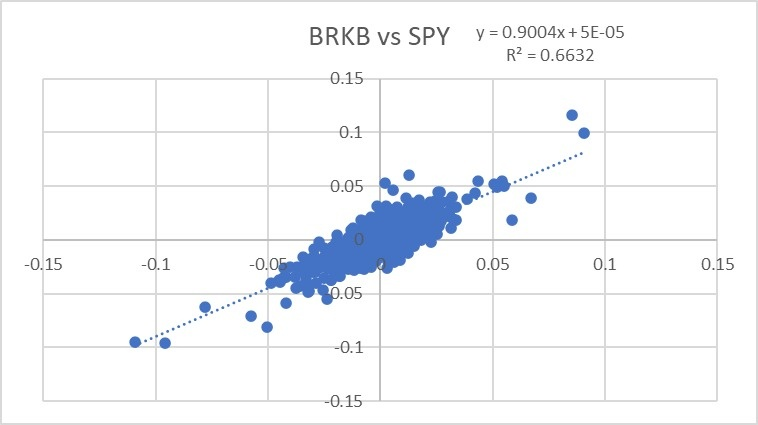
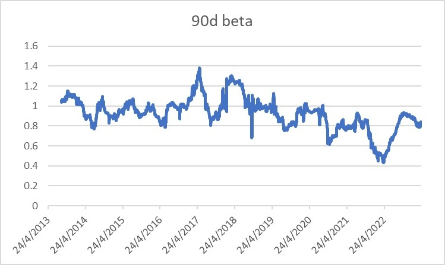
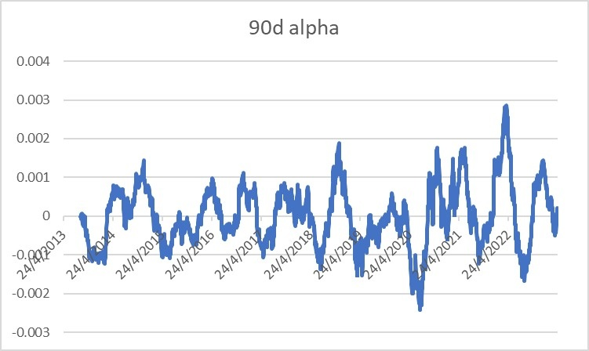
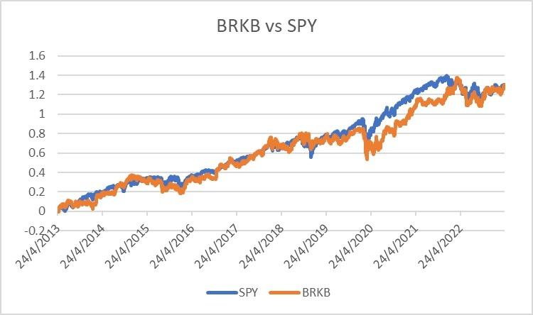
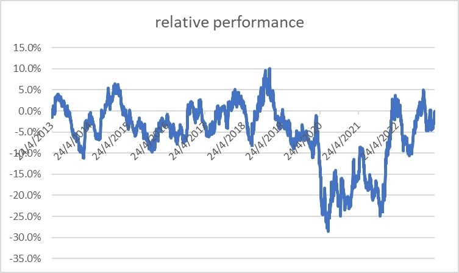

一談到股神，很多人就會下意識地想到巴菲特，尤其是媒體，無論談到甚麼，都愛拋巴菲特出來，warren buffett真的很忙。巴菲特多年來的平均年回報為20%，20%的確利害，大多數對沖基金平均年回報也是差不多，而巴菲特沒有對沖基金交易得那麼高頻，所以20%年回報真的利害（因為交易頻率愈高，愈大機會得到高回報）。
不過，要留意，這個20%的數字不是近年，而是幾十年來拉勻的平均年回報。那巴菲特近年表現如何？一起來看看數據。
我拿來了近10年數據看，把巴菲特與大市作個比較。大市當然是以SPY作代表。先看scattered plot，為下圖。

會發現，beta為0.9，即巴菲特的表現與大市高度相關，大市升1%，巴菲特會賺0.9%；如果大市跌1%，他理應虧0.9%，所以可以當成0.9倍的槓桿。除了beta，必須也看alpha。Alpha能真正看出一項資產或一隻基金去除槓桿影響後，是否真能跑贏大市。巴菲特alpha為0.005%，即每天跑贏大市0.005%。一年算下來，能跑贏大市1.26%。
1.26%是多是少？相信大家心中也有答案。除了看scattered plot外，也可以看看beta的time series，去了解巴菲特過去10年不同時間的beta。

從上圖可見，他大部分時間槓桿為1，亦與大市高度相關。再看看alpha的time series。

會發現alpha在0上下徘徊，沒有說哪段時間大幅跑贏或跑輸大市。
再看看大市與巴菲特的equity curve。

會發現真的大部分時間也是同步，而且在2020-2021年更是跑輸大市，後來在2022年追回，終點回報，即10年回報與SPY一樣。
最後一張圖，是把巴菲特累積回報減去大市累積回報，讓大家更清楚地看看中間跑贏跑輸的時期與幅度。

巴菲特真的很利害嗎？數據告訴我們，答案是不。
與大市同步也可被稱為股神？那隨意一個人走去長線持有SPY也是股神了。每年跑贏大市1.26%叫股神？如果我的基金每年只跑贏大市1.26%，你會買嗎？你作為媒體會走來訪問我嗎？答案呼之欲出，3歲小孩也懂。
那誰才是高手？誰才是真股神？大家可以先猜猜。下回分解。
Stay tuned!